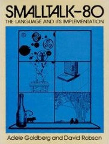
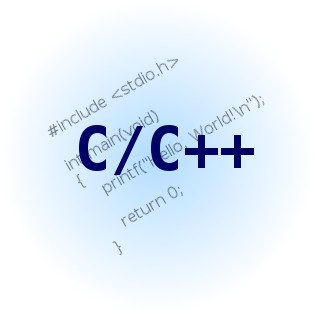

Javascript:
Evolution and
Perspectives
Massimiliano Mantione
massimiliano.mantione@gmail.com
Things I Never Did
Classical “web development”
Particularly, Javascript programming!
When I sow Javascript for the 1st time (in 1995) I vowed that I would never touch such an abomination, even with a 10 feet pole
Eventually, along this year, I changed my mind...
Javascript is a Hybrid Language
Functions (Lamba)
Lexical Scope
Loosely Typed
Dynamic Objects
Dynamic Dispatch
Prototypal Inheritance
Syntax
Some conventions
Name (Part)
Enjoy your Javascript
"WAT" moments!
(null !== undefined) && (null == undefined) ==> true
object = null;
if ( !object ) ... ==> /* if branch not taken */
[] + [] ==> ""
[] + {} ==> "[object Object]"
{} + [] ==> 0
{} + {} ==> NaN
To be fair, Javascript
has good parts...